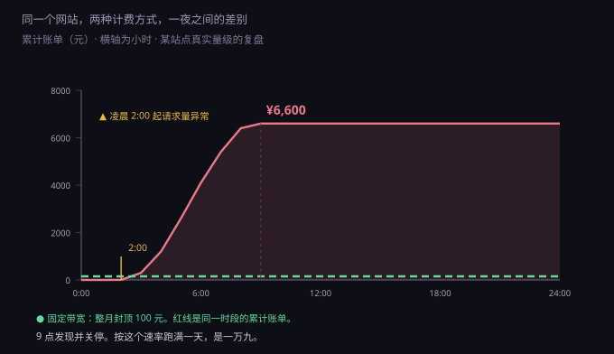
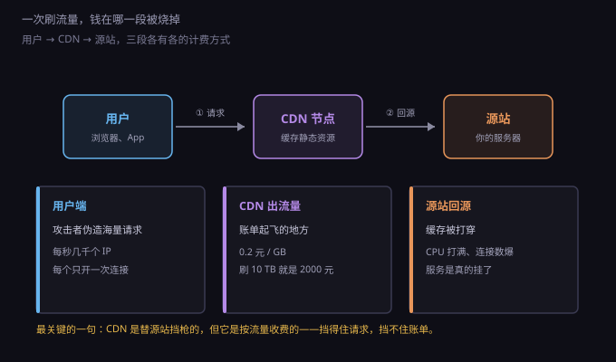
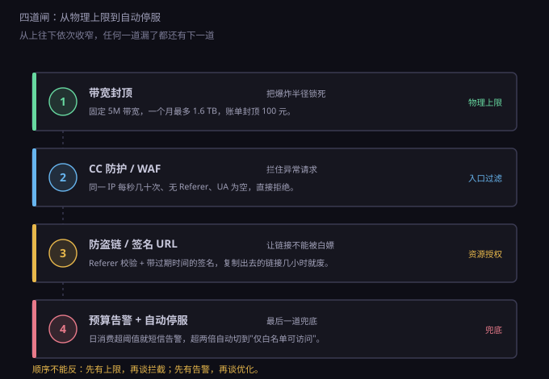

约 0.39 万字 · 3 张图 · 一条曲线在凌晨两点抬头，账单从二十变成六千六
先分清三种东西，它们的机制完全不同，防护手段也不一样。
第一种，盗刷流量。 有人找到你的图片、视频、安装包的直链， 把这个链接贴到别的地方，或者写进脚本反复下载。 你的服务器老老实实地把文件发出去，流量开始计费。
第二种，CC 攻击。 大量请求打在你的接口上，每次请求很小， 但服务器要查数据库、要算、要拼页面。 目标是让你的 CPU 和数据库扛不住。
第三种，DDoS。 用几万台机器同时向你的 IP 灌数据包， 把入口带宽占满，正常用户的请求根本进不来。
这三种攻击，只有第一种会直接变成"账单事故"。 CC 和 DDoS 通常表现为服务不可用， 云厂商的基础防护会清洗掉一部分， 而且它们不按流量收你的钱—— 被打进来的是入流量，而入流量通常是免费的。
记住这一条，后面很多事就通了： 云上的钱，是按"你发出去多少"收的，不是按"你收到多少"收的。 所以攻击者只要让你的服务器往外吐东西，就能让你花钱。
这是按真实事故量级画的复盘：一个按流量计费的站点， 放了一些高清图和几个视频，白天正常， 凌晨两点开始不对劲。

曲线的形状很有代表性：前两个小时几乎贴地， 从第三个小时开始抬头，之后是标准的指数曲线。
为什么是"抬头"而不是"直线上升"？ 因为攻击脚本通常在扫描和试探。 先发几十个请求看响应，发现没有防护， 再逐步加大并发，直到把你的出口带宽吃满。
按 0.8 元/GB 算，一小时刷掉 1.25 TB 就是一千块。 如果对方用的是便宜的高防代理池， 成本可能只有几十块。 这是一笔投入产出比极高的攻击：他花五十，你亏六千。
更麻烦的是，很多站点没有日消费告警。 默认设置是月账单出账后发一封邮件， 那时候已经过去三十天了。
回到 8.4.1 的那个数字：5M 带宽，一个月最多跑 1.6 TB。 这是物理上限，不是计费规则。
买固定带宽，本质上是买了一根固定粗细的管子。 攻击者往里灌多少都没用，管子只有那么粗， 流出去的量被卡死在 1.6 TB，账单也就是 100 元。
买按流量计费，本质上是买了一根"要多粗有多粗"的管子， 按流过的水量付钱。 攻击者想灌多少就灌多少，你没有上限。
这就是本节最重要的一个判断： 按流量计费省的是钱，赌的是没人来刷你。 对个人测试站，这个赌注很小； 对一个公开在互联网上的服务，这个赌注迟早会输。
所以一个很实用的做法是： 主站买固定带宽，静态资源走 CDN 并设流量封顶。 主站因为管子细，被打也只是慢，不会破产； CDN 那边设一个日流量上限，超了就停服， 损失可控。
有些云厂商的 CDN 支持"用量封顶"： 设一个阈值，比如每天 50 GB， 超过就自动关闭加速域名， 第二天零点自动恢复。 这个开关不要嫌麻烦，它是唯一能替你踩刹车的东西。
一个请求从用户到你的服务器，中间会经过几段。 每一段的计费方式不一样，被刷时的表现也不一样。

第一段，用户到 CDN。 这一段的流量由 CDN 承担，按 GB 计费， 国内大约 0.2 元/GB 起，用得越多单价越低。 被刷的时候，绝大部分钱花在这里。
第二段，CDN 回源。 CDN 没缓存到的东西要回你的服务器取，这叫回源。 回源流量单独计费，通常比 CDN 出流量便宜。 命中率越高，回源越少，钱越省。
第三段，源站出口。 如果你不用 CDN，用户直连服务器， 那这一段全走服务器的公网带宽。 固定带宽则封顶，按流量则无底。
注意一个反直觉的地方：加了 CDN 不等于更安全。 CDN 会隐藏你的源站 IP，这一点是好的； 但 CDN 本身是一个公开的、按流量计费的入口， 攻击者打它，成本直接落在你账上。
所以 CDN 配置里那几个开关必须打开： 流量封顶、Referer 黑名单、 单 IP 限速、区域封禁（如果只服务国内， 就把境外访问关掉——大量刷流量来自境外代理池）。
这个规则值得单独说，因为它和直觉相反。
云厂商计费时把流量分成两个方向： 入流量（ingress）是数据进你的服务器， 出流量（egress）是数据出去。 绝大多数厂商入流量免费，出流量收费。
理由是成本结构：机房的出口带宽要向运营商买， 入口带宽便宜得多，甚至是不对称的。 你在家里装宽带也是这样——下行 500M，上行只有 30M。 全世界的网络都被设计成"下载多、上传少"。
所以：
用户上传一张照片给你，不花钱；
你把这张照片展示给一万个人，花一万次的钱。
这也解释了一个常见困惑： 为什么"备份到云上"很便宜，"从云上恢复"很贵。 备份是入流量，恢复是出流量。 云厂商的冷存储便宜到几乎白送， 但你要把数据拿回来的时候，账单就来了。 这叫出口税，是所有云厂商共同的商业模式。
知道这个规则，就能推出一条省钱原则： 让数据尽量少出门。 图片压缩、视频转码、静态资源缓存、 分页而不是一次拉全量——每一条都是在减少"出门"的次数。
最常见的第一道防线是 Referer 校验，也就是"防盗链"。
原理很简单。浏览器在请求一张图片时，
会在请求头里带一个 Referer 字段，
写明"我是从哪个页面点过来的"。
服务器检查这个字段，如果来源不是自己的域名，就拒绝。
别人把你的图片贴到他网站上，他的页面地址不是你的域名， 浏览器带过去的 Referer 就不对，图就显示不出来。
听起来挺好。但要注意它的边界：
Referer 是请求头，而请求头是可以伪造的。
一条 curl -H "Referer: https://你的域名/" 就绕过去了。
所以防盗链挡的是"顺手盗图"的人，
挡不住"专门来刷你"的人。
另外它还有一个副作用： 用户在隐私模式、或者浏览器设置了"不发送 Referer"时， 正常访问也会被拦。所以配置时要允许空 Referer， 这会进一步降低防护效果。
结论：防盗链该配，但别指望它。 它的作用是降低"被无意盗用"的概率， 不是用来对抗攻击的。
真正有效的方案是签名 URL，也叫 URL 鉴权。
做法是：不直接把文件的真实地址给别人， 而是给一个带参数的临时地址，像这样：
/video/lesson1.mp4?expire=1735689600&sign=a3f9c2...
这个 sign 是服务器用一把密钥，
把"文件路径 + 过期时间"一起算出来的哈希值。
CDN 收到请求时，用同一把密钥重算一遍，
对得上才给文件。
关键在于：攻击者拿不到密钥，就算不出新的 sign。 他可以把这条链接原样转发出去， 但链接里写死了过期时间，几小时后就自动失效。 想继续刷，得重新申请，而重新申请要经过你的服务端， 服务端可以拒绝。
这就是从"验证来源"升级到"验证授权"。 防盗链问的是"你从哪来"， 签名 URL 问的是"你有没有票"。 前者可以撒谎，后者不能。
代价是多一次计算和一次请求。 对视频、付费课程、安装包这类大文件， 这点代价完全值得。 对普通网页图片，签名会破坏缓存，反而变慢—— 所以只对大文件用。
CC 和刷流量的区别，用一句话说： 一个要的是带宽，一个要的是 CPU。
刷流量是下载大文件，每次请求拿走的字节多； CC 是反复请求动态页面， 每次只有几 KB，但每次都要查数据库、渲染模板。
所以 CC 不会让你的流量账单爆炸， 它会让你的服务器卡死。 表现是：CPU 100%、数据库连接池打满、 响应时间从 50 毫秒变成 30 秒。
识别特征比较明显：
一是单个 IP 的频率异常高。 正常用户一分钟点几下，攻击脚本一秒钟几百次。
二是请求头很"干净"。 没有 Referer、User-Agent 是空的、 或者是一串明显伪造的值。
三是只打贵的地方。 首页不打了，专打搜索接口、登录接口、下单接口—— 因为这些地方最耗资源。
防护手段是限流，三个维度：
单 IP 每秒请求数、单 IP 并发连接数、
单 IP 每秒新建连接数。
在 Nginx 里对应 limit_req、
limit_conn 两组指令，几行配置就能生效。
再往上就是 WAF。它按规则库判断请求像不像攻击，
比如参数里带 SQL 关键字、路径里有 ../、
UA 匹配已知的攻击工具。
WAF 有误杀，所以上线前要观察一段时间日志再开拦截。
把上面的东西按顺序排，就是一套完整的防线。 顺序很重要，不能颠倒。

第一道，物理上限。 固定带宽、CDN 流量封顶。 这一道不拦任何请求，它只是保证"最坏情况也就这样"。 先有上限，再谈其他——没有上限的防护，等于没有防护。
第二道，入口过滤。 限流、WAF、区域封禁。 拦掉明显不正常的请求，减少进入后面的量。
第三道，资源授权。 签名 URL、Referer 校验、权限控制。 让链接不能被随意复用，把"一个链接被刷一万次" 变成"每个链接只能被用几次"。
第四道，兜底。 预算告警 + 自动停服。 前三道都有可能漏，这一道是最后的安全网。 日消费超过阈值就发短信， 超过两倍就自动切到"仅白名单可访问"。
这一道的成本最低，配置最简单， 但它是被跳过最多的一道。 原因很人性：觉得自己不会被盯上。
按顺序做，别慌，每一步都是在减少损失。
第一步，先止血，别先查原因。 把域名解析切走，或者直接停用 CDN 加速域名， 或者把源站的安全组改成只允许自己 IP 访问。 这时候网站会挂，但账单会停。 服务可以恢复，钱花出去回不来。
第二步，保存日志。 访问日志、CDN 日志、账单明细，全部导出来存好。 后面申诉、报案、分析特征都要用。 注意有些厂商的日志只保留几天，别拖。
第三步，找云厂商提工单。 说明情况：被攻击、已止损、请求核查。 大客户通常能拿到一次性的费用减免， 中小客户至少要争取"不封号"。 主动报备比自己扛着强—— 欠费不交会被停服、影响信用，性质完全不一样。
第四步，恢复时把闸装上。 如果直接恢复原样，多半会被再刷一次。 攻击者会记录哪些站"好欺负"。
还有一件事要做：算清楚被刷了多少。 流量除以文件大小，能估出请求次数； 请求次数除以时间，能估出用了多少个 IP。 这些数字决定了下次该开多大的防护。
前面讲的都是"出了事怎么挡"。 更彻底的办法是让这件事不值得被刷。
一、视频不放自己的服务器。 一段 10 分钟 1080p 视频大概 500 MB， 被下载一千次就是 500 GB。 放对象存储 + CDN，成本是每 GB 几分钱； 放自己服务器，等于把带宽当硬盘用。 更省的做法是直接放第三方视频平台，用嵌入播放。
二、图片先压缩再上传。 一张手机原图 3 MB，压成 WebP 后 200 KB， 差 15 倍。同样的访问量，流量账单差 15 倍。 这件事不需要任何技术，上传前跑一遍就行。
三、大文件走签名 URL，小文件走缓存。 按文件大小分流，是成本最低的架构优化。
四、数据库绝不暴露在公网。 这一条不属于"刷流量"， 但属于同一类错误：把不该开门的东西开了门。 数据库端口一旦暴露，被爆破只是时间问题。
最后一句总结这一节： 流量的成本，从来不是在账单上决定的， 是在架构图上决定的。 等账单来了再想办法，能做的只有止损。